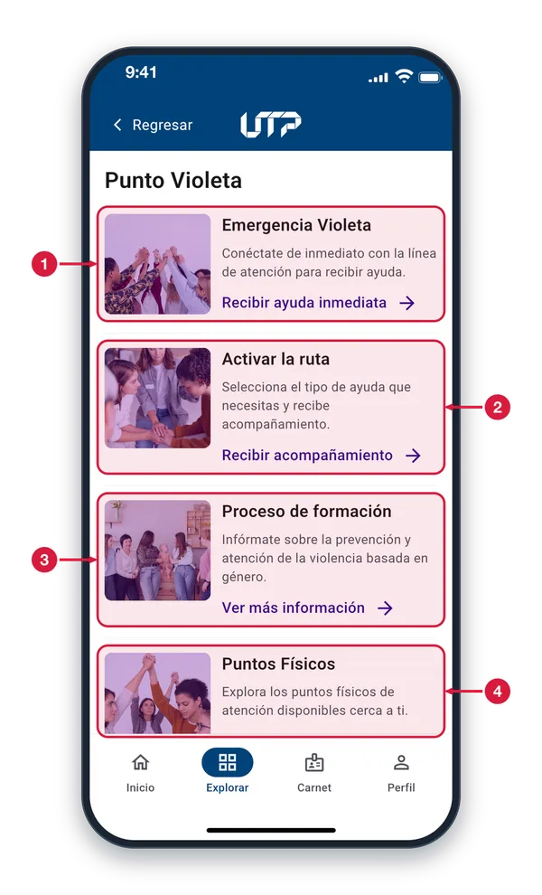
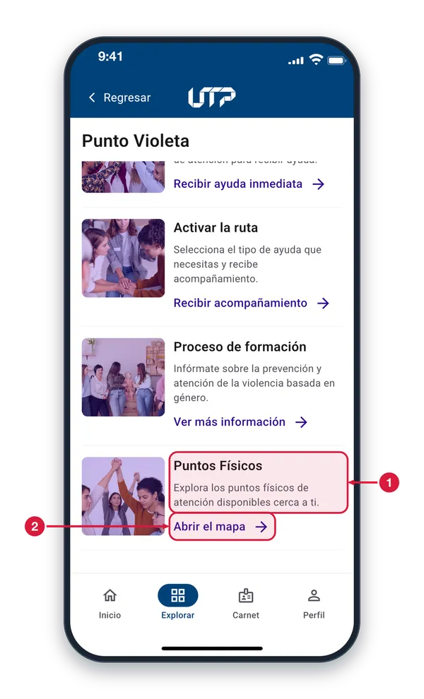
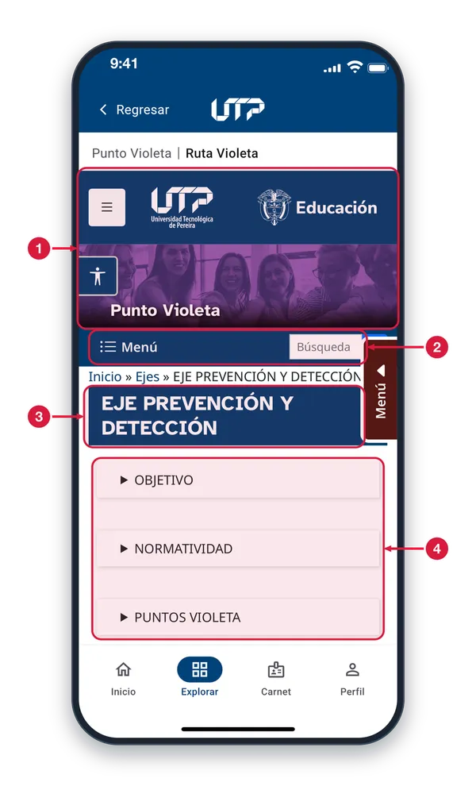
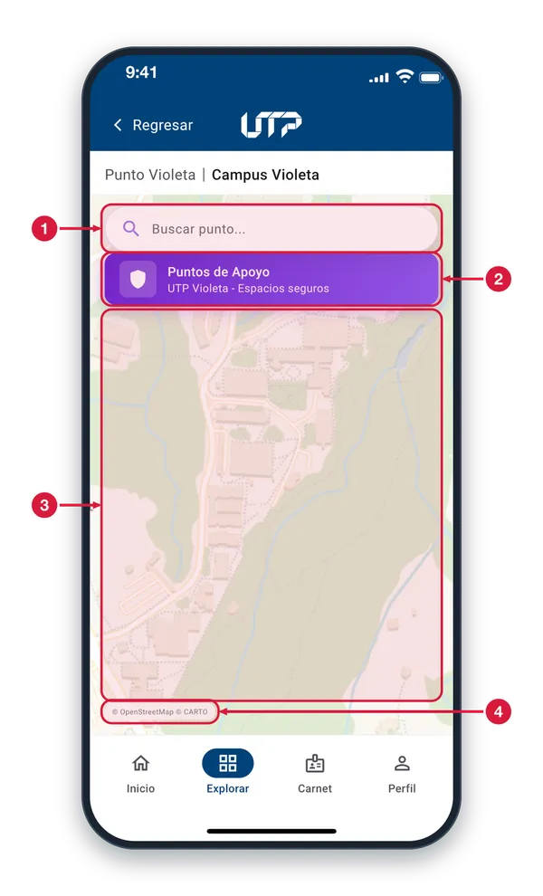
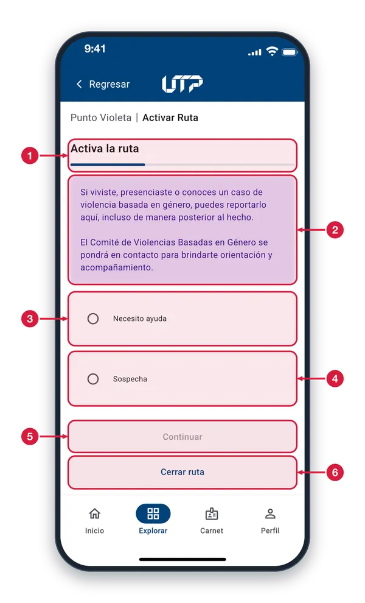
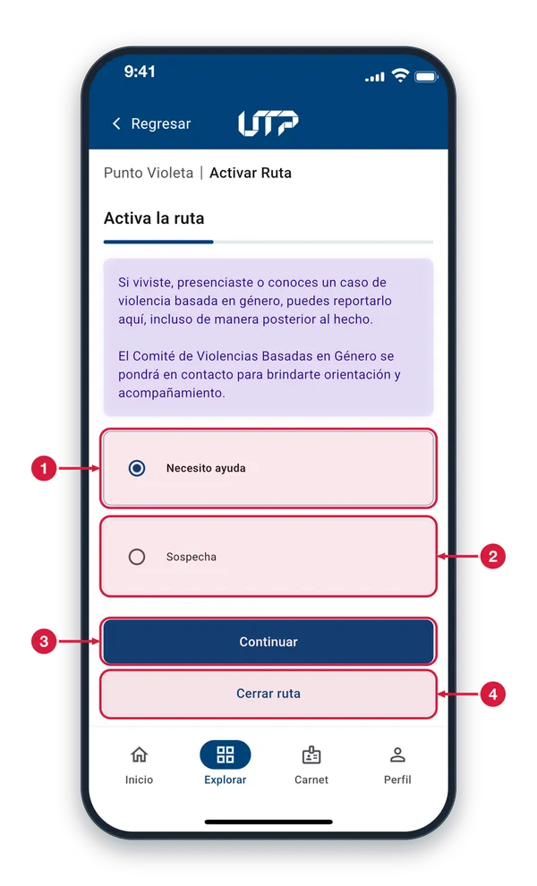
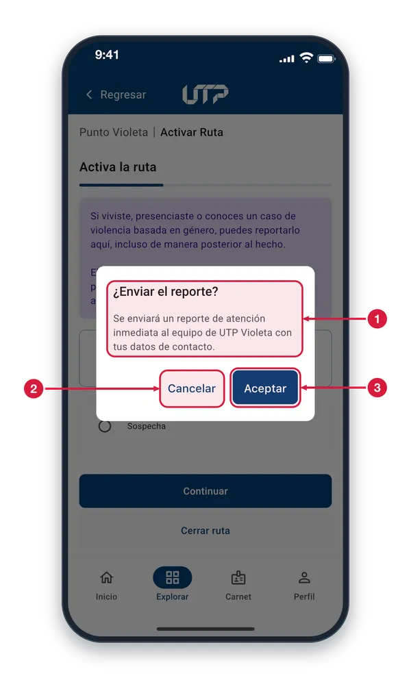
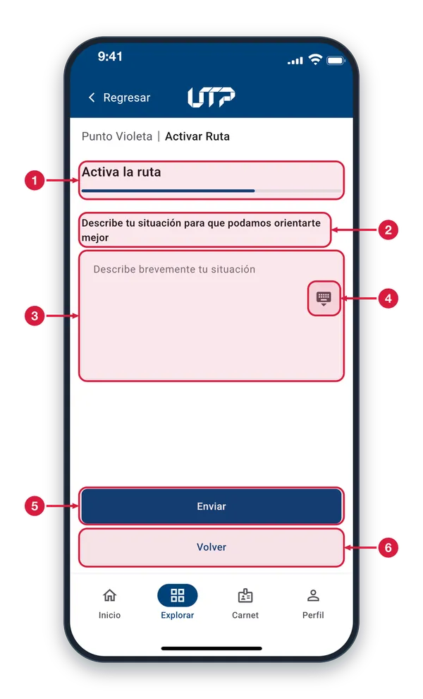
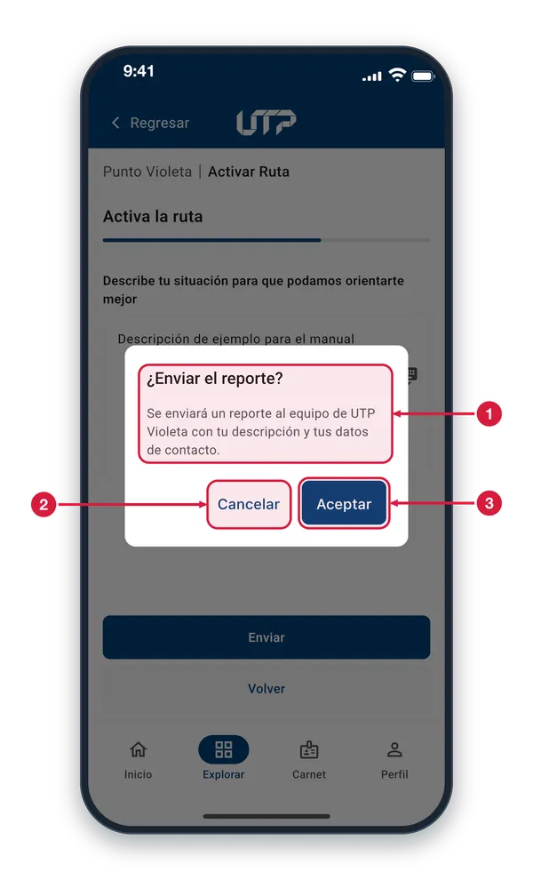
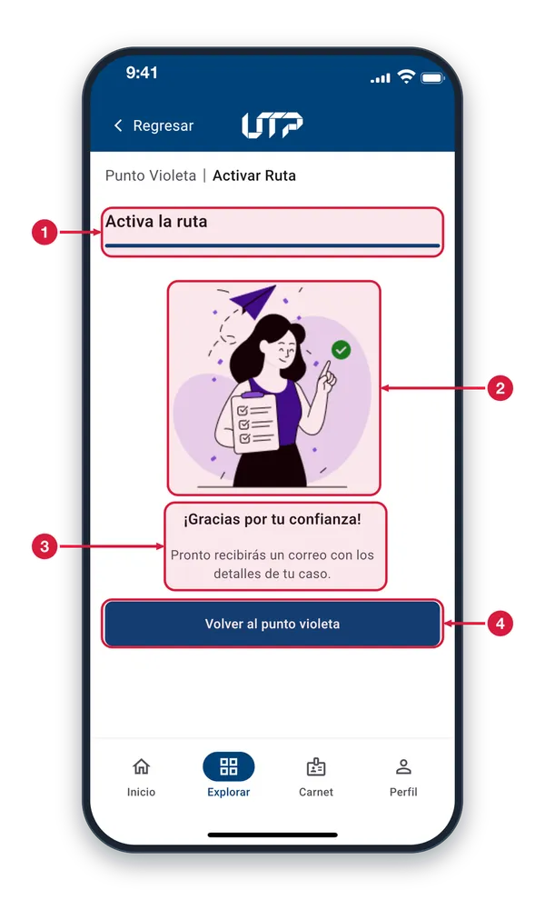

Prevención y reporte de violencia basada en género.
Punto Violeta
Prevención y atención de la violencia basada en género: emergencia violeta, activación de la ruta, proceso de formación y puntos físicos de atención.
El módulo de Punto Violeta cuenta con:
Emergencia Violeta: línea de atención inmediata
Activar la ruta: ayuda inmediata o acompañamiento
Proceso de formación sobre prevención y atención
Puntos físicos de atención en el campus
Mapa con los puntos violeta y su tutor o tutora de apoyo
Solo podrás ver y hacer uso del módulo PUNTO VIOLETA cuando te loguees en la aplicación
PUNTO VIOLETA
Inicio de Punto Violeta1 de 4
Punto Violeta reúne ayuda inmediata, acompañamiento, formación y puntos de apoyo. Toca el enlace de cada tarjeta.

Emergencia Violeta Toca «Recibir ayuda inmediata» y se abre el marcador de tu teléfono con la línea de atención lista para llamar. Si estás en peligro o necesitas ayuda ahora, usa esta opción.
Activar la ruta Toca «Recibir acompañamiento» para reportar un caso de violencia basada en género y recibir orientación. Se abre «Activar Ruta», donde eliges el tipo de ayuda.
Proceso de formación Toca «Ver más información» para leer, dentro de la app, la página de la universidad sobre la prevención y detección de la violencia basada en género.
Puntos Físicos Toca «Abrir el mapa» para ver los puntos de apoyo del campus. Esta tarjeta se ve completa al desplazar la pantalla hacia abajo.
Puntos Físicos2 de 4
Desplázate hacia abajo en Punto Violeta hasta la última tarjeta para abrir el mapa con los puntos de apoyo.

Puntos Físicos Aquí se anuncian los puntos físicos de atención y apoyo disponibles cerca de ti. Para verlos, toca el enlace que está justo debajo de este texto.
Abrir el mapa Toca «Abrir el mapa» y se abre «Campus Violeta», el mapa con los puntos de apoyo. Para volver a Punto Violeta, toca Regresar.
Proceso de formación3 de 4
Se abre dentro de la app la página de la universidad sobre el eje de prevención y detección. Toca Regresar para volver.

Página de la universidad Es el sitio web de la universidad, abierto dentro de la app. Mientras carga ves un indicador de avance; si no hay conexión, aparece un aviso con el botón Reintentar.
Menú y búsqueda del sitio Son controles del propio sitio web: el menú te lleva a sus secciones y la caja de búsqueda sirve para encontrar un tema.
Eje Prevención y Detección Es el tema de esta página, que forma parte del proceso de formación de Punto Violeta.
Secciones desplegables Toca el título de una sección (Objetivo, Normatividad, Puntos Violeta) para abrir su contenido; tócalo de nuevo para cerrarlo.
Mapa de puntos de apoyo4 de 4
«Campus Violeta» muestra en un mapa los puntos de apoyo del campus. Llegas con «Abrir el mapa» en Puntos Físicos.

Buscar punto Escribe el nombre de un punto de apoyo y aparece una lista; toca uno y el mapa se centra en él. Toca la X para borrar lo escrito.
Puntos de Apoyo Te recuerda que los puntos del mapa son espacios seguros de UTP Violeta. Es solo informativo.
Mapa del campus Muévelo con el dedo y pellizca para acercar o alejar. Toca la etiqueta de un punto para ver su ficha: Ubicación (foto) o Tutor/a, con «Contactar» para escribirle un correo.
Créditos del mapa Indica el origen del mapa (OpenStreetMap y CARTO). Es solo informativo.
Ruta Violeta
Reporta un caso de violencia basada en género, incluso de manera posterior al hecho. El Comité de Violencias Basadas en Género se pondrá en contacto contigo.
Cómo activar la ruta:
Elige Necesito ayuda o Sospecha y toca Continuar
Confirma el envío del reporte en el aviso (Aceptar o Cancelar)
Describe brevemente tu situación y toca Enviar
Recibirás un correo con los detalles de tu caso
Si no deseas continuar, usa Cerrar ruta o Volver
Solo podrás ver y hacer uso del módulo RUTA VIOLETA cuando te loguees en la aplicación
RUTA VIOLETA
Activar la ruta: tipo de ayuda1 de 6
Eliges qué tipo de ayuda necesitas. Tú decides: no se envía nada hasta que confirmes.

Paso del proceso La barra muestra en qué paso vas. Aquí estás en el primero de tres: elegir el tipo de ayuda, describir la situación y recibir la confirmación.
Antes de empezar Puedes reportar un caso que viviste, presenciaste o conoces, incluso después de que ocurrió. El Comité de Violencias Basadas en Género se pondrá en contacto para orientarte y acompañarte.
Necesito ayuda Elígela si necesitas atención. Al continuar, confirmas el envío de un reporte de atención inmediata. Si hay un peligro ahora, llama antes desde «Emergencia Violeta».
Sospecha Elígela si sospechas o conoces un caso de violencia basada en género. Al continuar podrás describir la situación con tus palabras antes de enviar el reporte.
Continuar Está en gris, sin poder tocarse, hasta que eliges una opción. Cuando eliges una se activa y te lleva al siguiente paso.
Cerrar ruta Si no quieres continuar, toca aquí: sales y vuelves a Punto Violeta sin enviar nada. Puedes empezar de nuevo cuando quieras.
Tipo de ayuda elegido2 de 6
Al elegir una opción, el círculo se llena y el botón Continuar se activa. Puedes cambiar de opción tocando la otra.

Opción seleccionada La opción que elegiste se marca con el círculo lleno y el borde resaltado. En esta captura es «Necesito ayuda».
Otra opción Si prefieres esta, tócala: reemplaza a la anterior. Solo puedes tener una opción elegida a la vez.
Continuar Ya está activo (azul). Con «Necesito ayuda» aparece un aviso para confirmar el envío; con «Sospecha» pasas a describir la situación.
Cerrar ruta Sales de la ruta y vuelves a Punto Violeta sin enviar nada. La opción que elegiste no se guarda.
Confirmar «Necesito ayuda»3 de 6
Antes de enviar, la app te pide confirmar. Si hay un peligro ahora, llama desde «Emergencia Violeta» en Punto Violeta.

¿Enviar el reporte? Explica qué se envía: un reporte de atención inmediata al equipo de UTP Violeta, con tus datos personales y de contacto, como tu nombre, documento y teléfono.
Cancelar Cierra el aviso sin enviar nada. Vuelves a la pantalla anterior, donde puedes cambiar de opción o salir con «Cerrar ruta».
Aceptar Envía el reporte y te lleva a la pantalla «Gracias». Si no se puede enviar, ves un aviso para intentarlo de nuevo y conservas lo que elegiste.
Describe tu situación4 de 6
Aquí cuentas, con tus palabras, lo que quieras compartir sobre la situación. Escribirlo es opcional.

Paso 2 de 3 La barra va por dos tercios: estás en el segundo paso, describir la situación. El tercero es la confirmación del envío.
Indicación Te invita a contar tu situación para que puedan orientarte mejor. Escribe solo lo que quieras compartir, con tus propias palabras.
Describe tu situación Escribe aquí una descripción breve. Si lo dejas vacío, se envía solo el tipo de ayuda que elegiste. Si sales con texto escrito, la app te pregunta antes de descartarlo.
Ocultar el teclado Toca este icono para cerrar el teclado y ver los botones Enviar y Volver. Lo que escribiste se conserva.
Enviar Toca Enviar y aparece el aviso «¿Enviar el reporte?» para que confirmes. El reporte solo se envía al equipo de UTP Violeta cuando aceptas.
Volver Regresa al paso anterior, elegir el tipo de ayuda. La opción elegida se conserva, pero el texto que escribiste se borra.
Confirmar el envío: Sospecha5 de 6
Antes de enviar tu descripción, la app te pide confirmar. Nada se envía hasta que toques Aceptar.

¿Enviar el reporte? Avisa que se enviará un reporte al equipo de UTP Violeta con tu descripción y tus datos personales y de contacto, como tu nombre, documento y teléfono.
Cancelar Cierra el aviso sin enviar nada. Sigues en esta pantalla y puedes cambiar lo que escribiste o tocar Volver.
Aceptar Envía el reporte y te lleva a la pantalla «Gracias». Si no se puede enviar, ves un aviso para intentarlo de nuevo y no pierdes lo que escribiste.
Reporte enviado6 de 6
Tu reporte se envió al equipo de UTP Violeta. Esta pantalla lo confirma y te dice qué sigue.

Paso 3 de 3 La barra llena indica que terminaste el proceso: tu reporte quedó enviado.
Confirmación La ilustración acompaña el mensaje de agradecimiento. Es solo visual.
Qué sigue Recibirás en tu correo institucional los detalles de tu caso. Como se te explicó al inicio, el Comité de Violencias Basadas en Género se pondrá en contacto contigo para orientarte y acompañarte.
Volver al punto violeta Te devuelve al inicio de Punto Violeta. Desde allí puedes llamar a «Emergencia Violeta» si en algún momento necesitas ayuda inmediata.